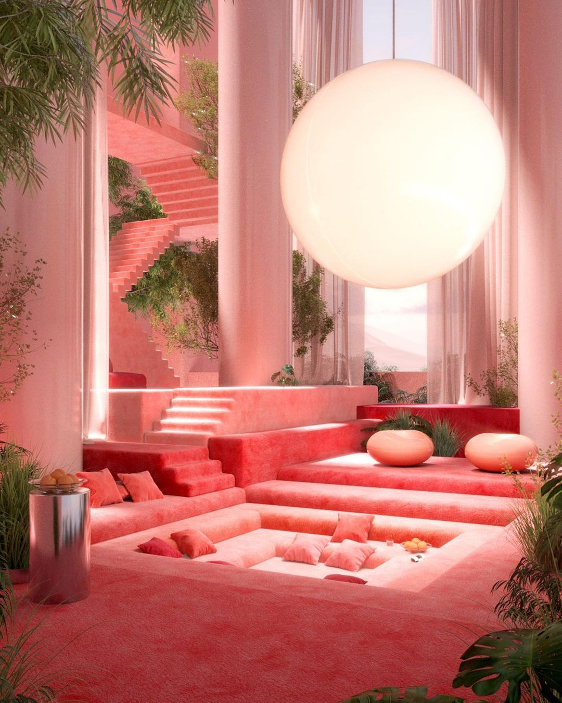

Featured this week
About this portal
The City Information Portal is Elyria's public-facing information system. Use it for district news, care center status, nourishment schedules, upcoming events, and community notices.
Information is updated daily. For urgent matters, contact your district's civic building directly.
